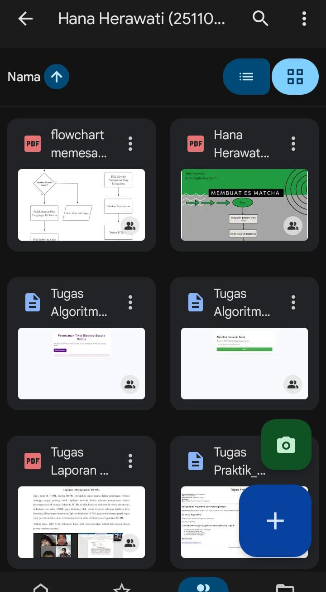

Nama Mahasiswa: Hana Herawati
NIM: 251104040056
Program Studi: S1 Bisnis Digital
Semester: 1
Mata Kuliah: Algoritma dan Pemrograman
Algoritma adalah langkah-langkah logis yang digunakan untuk menyelesaikan masalah serangkaian langkah atau instruksi yang logis dan sistematis untuk menyelesaikan suatu masalah atau mencapai tujuan tertentu, bisa digunakan dalam kehidupan sehari-hari (seperti resep masakan) maupun dalam komputasi untuk memproses data dan menjalankan program komputer, dengan ciri khasnya yang harus jelas, terurut, efisien, dan memiliki titik akhir. , sedangkan pemrograman adalah proses menulis instruksi yang dapat dijalankan oleh komputer.
Berikut contoh ilustrasi alur algoritma sederhana:
Dokumen ini dibuat sebagai tugas praktik HTML.